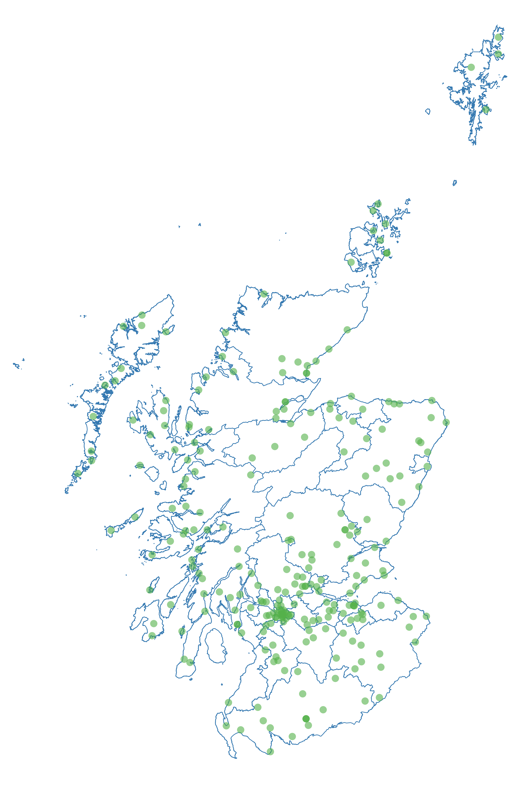
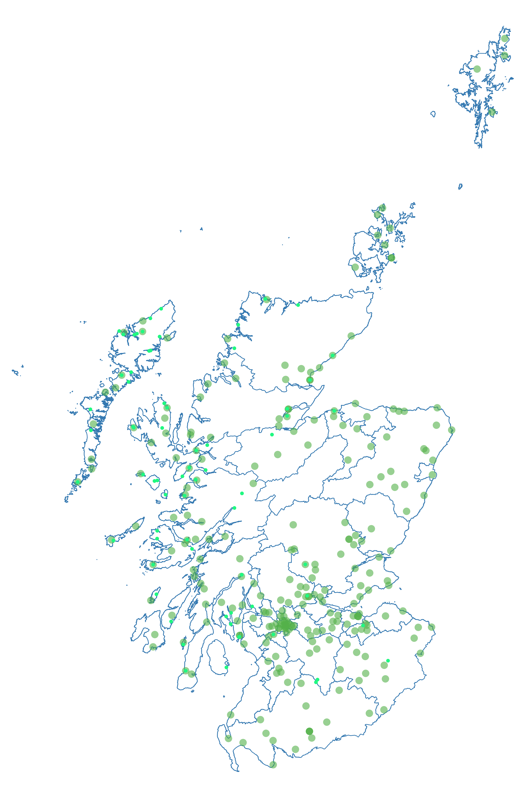
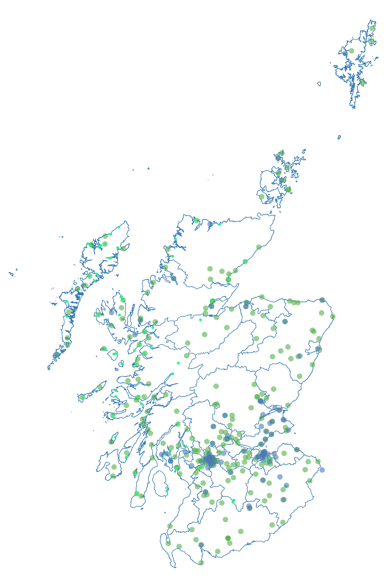
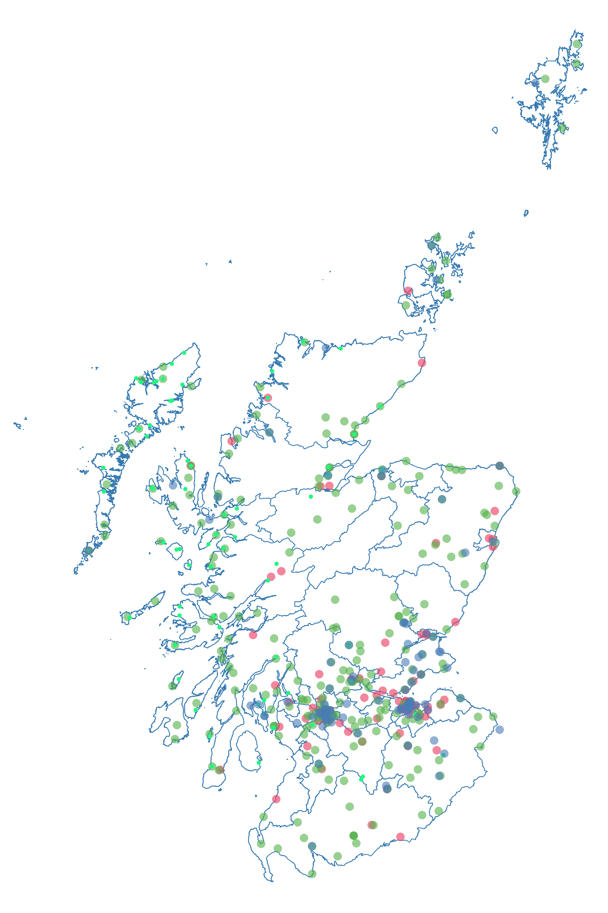
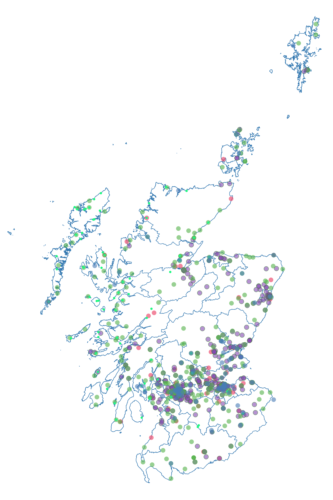
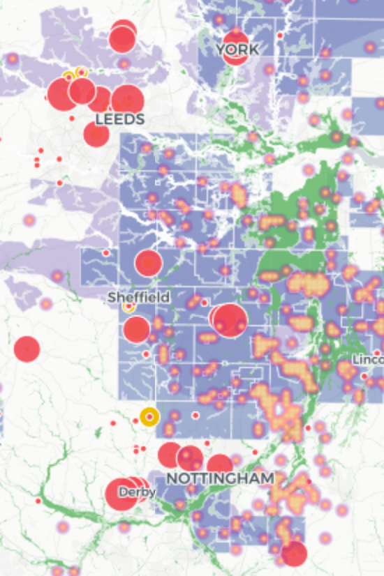

class: center, middle # The *Scottish Communities Report* 5 June 2018 Stop Climate Chaos Board Meeting ## Jeremy Kidwell, PhD ### University of Birmingham [j.kidwell@bham.ac.uk](mailto:j.kidwell@bham.ac.uk) • [@kidwellj](https://twitter.com/kidwellj) .footnote[View this presentation at: http://jeremykidwell.info/files/presentations/presentation_05042018_sccs.html] ??? Presentation engineered with remark: https://github.com/gnab/remark/wiki --- # 4 key questions for today: 1. What are community groups in Scotland? 2. What should we know about them? 3. How can we improve engagement between national networks like SCCS and community groups? --- .left-column[ ### Community Groups in Scotland - Development Trusts Assoc. Scotland ] .right-column[] --- .left-column[ ### Community Groups in Scotland - Development Trusts Assoc. Scotland - Community Land Groups ] .right-column[] --- .left-column[ ### Community Groups in Scotland - Development Trusts Assoc. Scotland - Community Land Groups - Scottish Communities Climate Action Network ] .right-column[] --- .left-column[ ### Community Groups in Scotland - Development Trusts Assoc. Scotland - Community Land Groups - Scottish Communities Climate Action Network - City Farms & Gardens ] .right-column[] --- .left-column[ ### Community Groups in Scotland - Development Trusts Assoc. Scotland (263) - Community Land Groups (69) - .red[Scottish Communities Climate Action Network (95)] - City Farms & Gardens (92) - .red[Eco-Congregations (431)] ] .right-column[] --- There are four different types of community environmental group: - The **.red[lone voices]**: a single person working in the midst of either indifference or hostility in the wider community. - The **.red[local heroes]**: as above but with sanction and/or indirect support by the wider community. - **.red[Small but active]**: a small and generally self-contained group of 3-12 persons. - Large with differential involvements (**.red[LDI]**): many people with varying levels of participation. --- The local work of community groups is often invisible from a National perspective. So what role do these groups play? --- ## 1. Niche & Experimentation .right-column[Specific policy interventions can be helped by a "proof of concept" Smaller community groups can help to form a "niche" which can serve as laboratories for testing out new ideas.red[*]] .footnote[.red[*] For more on this, check out: René Kemp, Johan Schot & Remco Hoogma, 1998. "[Regime shifts to sustainability through processes of niche formation: the approach of strategic niche management](https://www.tandfonline.com/doi/abs/10.1080/09537329808524310)." Technology Analysis & Strategic Management, vol. 10, iss. 2, pp. 175–198. For an overview of research into sustainability transitions see: Jochen Markard, Rob Raven & Bernhard Truffer, 2012. ["Sustainability transitions: an emerging field of research and its prospects"](https://www.sciencedirect.com/science/article/pii/S004873331200056X). Res. Policy 41 (6), 955–967.] .left-column[<img style="width:70%;margin-top:-1em;" src="https://www.artsfwd.org/wp-content/uploads/2016/01/IMG_2188-1-427x640.jpg">] --- ## 2. Up-scaling Community groups often form ad-hoc regional/national networks. On the level of these "leaner" networks, information can be disseminated more efficiently and experiments may be multipled. --- ## 3. Formation of community "values" Environmental values are often cultivated and deployed through practices on a local level. Community groups enable persons to express environmental work and advocacy through (and not in spite of) their personal values. Similarly, community groups can often form the context where environmental transitions are "materialised," that is, embedded in concrete changes to local infrastructure. --- ## 4. Consolidating opinion More than serving as the sum of the individuals who are involved, community groups can provide a safe supportive space where convictions can be transformed into action. --- # **Question 2**: What do we need to know about community environmental groups? --- ## 1. Groups Overlap! In some cases, a group will connect with a range of different networks, setting up a Development Trust for the sake of a funding application and a transition group for another project. Similarly, individual members of these groups may participate in a whole range of activities, performing different eco-identities in each context. --- ## 2. Issues are not the driver Whereas for national networks and campaigning organisations, "action" and "issues" can often serve as the main driver. In contrast, with community groups, the opposite is often the case. Groups are driven by community formation and support, and issues come afterwards..red[*] .footnote[.red[*] For more on this form my research, check out the forthcoming article: "Christian climate care: Slow change, modesty, and eco-theo-citizenship", coming out later in 2018. --- ## 3. Local groups aren't always "local" In workshops we've conducted, we have found that these groups can often contain a wide mix: including people who have resided for multiple generations in a community to foreign nationals who have been resident in Britain for only a few years. --- ## 4. Local groups are often "lean" Resourcing is extremely scarce. Though some groups are successful at securing lottery funding or a climate challenge fund grant, far more often groups work with minimal resourcing. This means there isn't any formal staff, and their activities are outside working hours, and activities will rely on volunteered expertise. --- ## 5. Local groups work hard Many of the volunteers involved in these groups are tremendously hard working people, putting in hundreds of pro bon hours each year. Small successes and public attention can provide a major boost. Similarly, setbacks can often dampen work for long durations. --- ## Quick review: - Community groups provide a "niche" for experimentation - Their work can often provide the basis for up-scaling larger sustainability transitions - Local groups can help galvanise action by connecting environmental concerns with values - More than the sum of their individual members, local groups can help to multiply enthusiasm and enable action --- ## Quick review (part 2): - Group memberships overlap, participants often have multiple "environmental identities" - Groups can tend to be focussed on community building over "issues" - Local groups aren't always comprised of "locals" - Local groups usually have no budget or resources, relying on volunteers. - They work really hard but their work can be precarious. Small resources, encouragement, and setbacks can provide an outsize effect. --- # **Question 3**: How can we work more effectively with community groups? --- ## Idea 1: Use social media We conducted a study of five Scottish community group networks (633 total). Based on this research, these groups use the following social media platforms: - Groups which have a .blue[website]: **87%** - Groups with a .blue[facebook page/group]: **70%** - Groups with a .blue[twitter feed]: **26%** (ranging from 16% to 35%) - Groups with .blue[no social media] (including website): **9%** (ranging from 3% to 18%) Fuller analysis of social media engagement and social networks forthcoming... --- ## Idea 2: Targetted communications make a difference Each network has a range of different forms of work: food growing, infrastructure. Similarly, groups have different approaches to policy engagement - some are direct others are indirect. .left-column[ I'm working with several of these networks to survey their membership to identify these patterns and enable more bespoke outreach, e.g. identifying "high stakes" groups near licensed fracking wells and "politically active" groups with identified experience hosting hustings and local MPs.] .right-column[] --- ## Idea 3: Build in reciprocity Community groups can have tremendous impact within their local area (and elected political leaders by extension). They also have access to social networks which are unknown / inaccessible to major NGOs. We're often used to the "direct" appraoch to the public, but can we find ways to treat community groups as intermediaries? **The potential impact of policy co-creation and co-research could be very significant, especially given the uneven distribution of population across representative democracy.** --- ## Idea 4: Consider spinning off SCCS "communities" Stop Climate Chaos is very effective at advocacy and engagement on .red[high-level policy] and .red[direct outreach] to the concerned public. Our community engagement policy is a periodically successful accident of the above two. Might we consider setting up a working group tasked with engagement at the intermediate level? I'm happy to advise, as always. --- ## Recap - Use social media - Targetted communications / network subsetting - Build in reciprocity - Consider spinning off SCCS "communities"